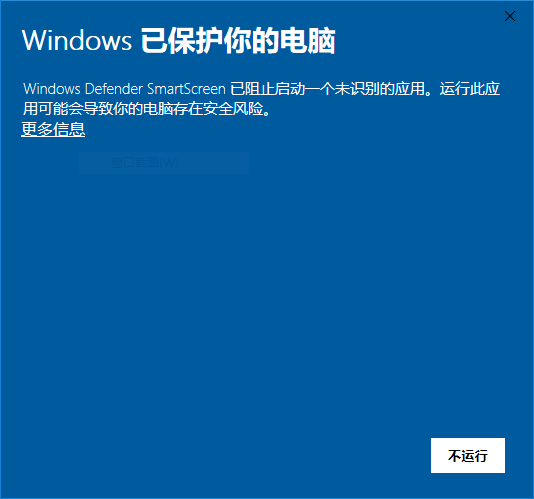
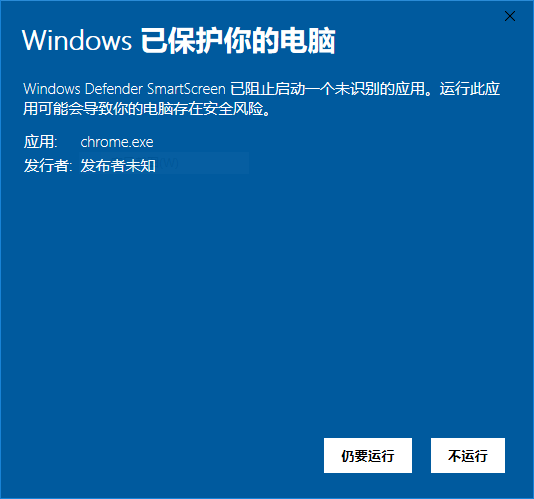
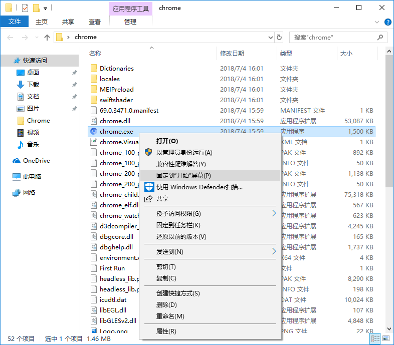

感谢下载
下载即将自动开始，如果5秒之后下载没有开始，可以点击
此链接手工下载
备用地址
chrome-windows-180701.zip
下载后解压缩，进入目录点击
chrome.exe
就可以使用。首次打开，Windows会安全提示，选择"更多信息"，再选择"仍要运行"


根据个人习惯，可以把chrome.exe固定到开始屏幕，固定到任务栏，或者桌面快捷方式，方便以后启动。

是否需要Android版免費VPN？
VPN和視頻下載的完美結合，娛樂到極致